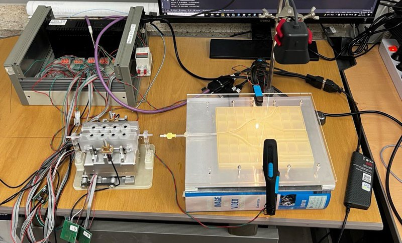

Academic bedside robots · kaist_cho2022
KAIST wire bench
KAIST/Asan guidewire-controller test bench for image-based sim-to-real navigation


- Family
- Academic bedside robots (academic)
- Devices
- one guidewire
- Degrees of freedom
- 2 (translation 0.4 mm steps, rotation 10 deg steps in cho2022)
- Push
- Not reported
- Twist
- Not reported
- Tested up to
- Phantom
- Sim-to-real
- Yes — A controller or perception model trained in simulation ran on this robot.
Testing
- Highest level
- Phantom
- What was tested
- cho2022: 40 phantom episodes; yoo2025: three tests of 40 runs each on one bench with four paths
- Key numbers
- cho2022: simulation 100/100, phantom 40/40, 35.06 s vs 63.2 s for the rule-based controller; yoo2025: simulation 86.9 % with vessel randomisation vs 53.7 % without, phantom 93.3 %, 89.2 %, 91.7 % (earlier controllers 83.3 % and 19.2 % in test I) (S7b evidence)
Mechanism
- Push (translation)
- N.R. (called 'a guidewire controller'; photo shows a compact block with wiring, mechanism not described)
- Twist (rotation)
- N.R.
- Device range
- N.R.
- Target anatomy
- planar vessel phantom (bifurcating paths) on a bench; coronary-like trees in simulation
Sensing and interface
- Force sensing
- none
- Leader and haptics
- none
- Imaging
- Overhead camera replaces X-ray; image reduced to vessel and guidewire masks
- Sterility
- N.R.
Size
- Footprint (mm)
- N.R.
- Mass (kg)
- N.R.
Simulation
- Simulation model
- SOFA vessel and guidewire simulation, one planar map with four targets (cho2022); randomised vessel trees every episode (yoo2025)
- Sim-trained controller
- yes: both papers train in SOFA and run on the physical bench (cho2022 40/40; yoo2025 93.3 %, 89.2 %, 91.7 %); full read by S7b agent, abstract/figures re-checked here
- Studies on this robot
- 2022 · Sim-to-Real Transfer of Image-Based Autonomous Guidewire Navigation Trained by Deep Deterministic Policy Gradient with Behavior Cloning for Fast Learning — sim 100/100, 41.08 s (expert 66.17 s); robot 40/40, 35.06 s (expert 63.2 s)
- 2025 · A Robust Deep Reinforcement Learning Framework for Image-Based Autonomous Guidewire Navigation — sim 86.9% (67 episodes x 3) vs 53.7% without vessel randomisation; robot 93.3%, 89.2%, 91.7% (three tests); Cho 2022 controller 83.3%, rule-based 19.2% in test I
Versions
- Lineage
- cho2022_sim (IROS 2022, DDPG+behaviour cloning) -> yoo2025_robust (ICRA 2025, PPO with domain randomisation); same test bench in both
Sources
- Sim-to-Real Transfer of Image-Based Autonomous Guidewire Navigation Trained by Deep Deterministic Policy Gradient with Behavior Cloning for Fast Learning · 2022 IEEE/RSJ International Conference on Intelligent Robots and Systems (IROS), 2022 · doi:10.1109/iros47612.2022.9982168 [cho2022_sim]
- A Robust Deep Reinforcement Learning Framework for Image-Based Autonomous Guidewire Navigation · 2025 IEEE International Conference on Robotics and Automation (ICRA), 2025 · doi:10.1109/icra55743.2025.11127741 [yoo2025_robust]
Notes
- Notes
- Jaesoon Choi is listed with LN Robotics in yoo2025, the maker of the commercial AVIAR (A4 scope); the bench driver may share hardware with AVIAR but the papers do not say so.
This record
- Read level
- partial — partial (cho2022, yoo2025 text); S7b evidence
- Picture
- cho2022_sim Fig. 8 (guidewire controller, controller box, camera, phantom), IROS 2022, doi:10.1109/IROS47612.2022.9982168 ↗ — licence: publisher copyright; grade B
- Picture changes
- native extract (878x878); cropped to the bench; no erasing; not upscaled
- Found by
- academic: Search of academic bedside robots.
- Data
- JSON · YAML:
records/robots/kaist_cho2022.yaml - Correction
- Suggest a correction [repository not created yet]